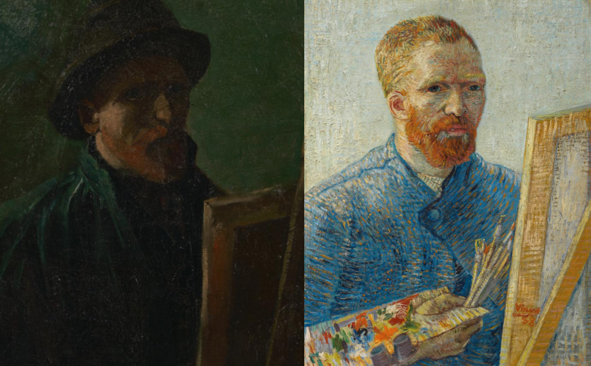

Vincent Van Gogh's palette during the early years of his career consisted mainly of sombre earth tones, particularly dark brown, and his later works are distinguished by the use of vivid colors such as blue, yellow and orange. His technique consisted of using colors to capture mood and emotion, rather than using colors realistically, which was uncommon during his time. Putting Vincent's self-portraits side by side, the contrast between the two paintings stick out to the eye, highlighting the development of Vincent's color palette. Vincent's favorite color was yellow, and he often wrote to his brother Theo describing the different yellows he was using in his works.